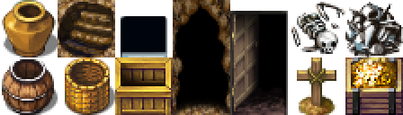
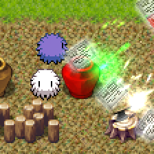
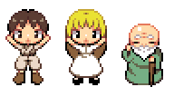
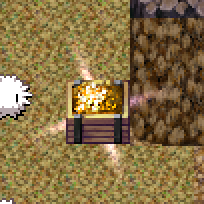
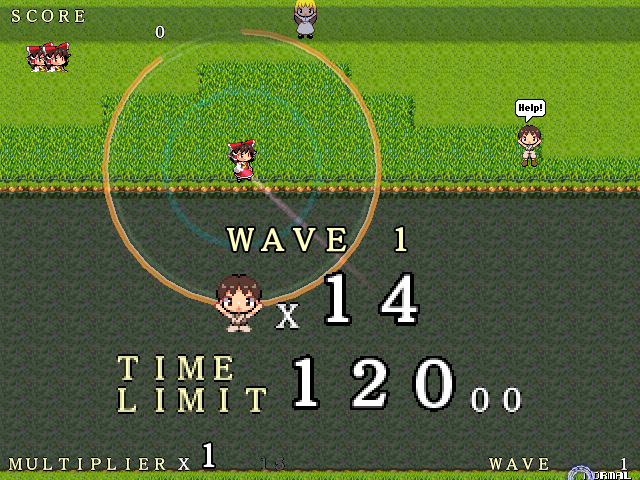
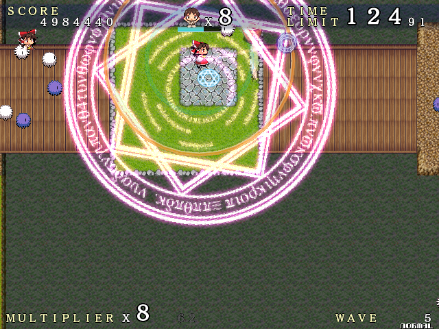

ゲームのルール
毛玉たちとジェネレータ
毛玉たちはマップ上のそこかしこに隠れています。毛玉が出てくる場所は決まっており、毛玉が隠れている場所を「ジェネレータ」といいます。マップの他の障害物と同化していることもあります。

ジェネレータの見た目は上のどれかと決まっています。これらの物体があったら気をつけましょう。
ジェネレータにはショットを打ち込むことで破壊（封鎖）でき、毛玉の発生を止めることができます。ジェネレータにショットが当たっている時は、普通は白く見えるヒットマークが緑色に変化します。また、ジェネレータ自身が一瞬赤色に変化することでも確認できます。

ジェネレータの中には破壊しても時間が経つと復活してしまうものがあります。壊した後に「跡」が残っていた場合、しばらくすると復活してしまうので注意しましょう。このようなジェネレータを完全に壊すすべはありません。
パワーアップ
プレイヤーたちは永続的なパワーアップ手段を持っていませんが、アイテムを集めることで一時的にショットの性能を強化することができます。
毛玉を倒すと時々出てくるアイテムを回収すると、ピンク色の「パワーアップゲージ」が増えていきます。ゲージが満タン(円が一周する)と、プレイヤーのショットの性能がしばらくの間上がります。連射力が増し、弾数が増えます。パワーアップゲージは満タンになると徐々に減少を始め、ゼロになるとショットの性能は元に戻されます。
マップに隠されているを取ると即座にパワーアップ状態になれます。
どちらのアイテムも、パワーアップ中に取ってしまうと完全に無駄になる(ゲージを増やす効果がない)ことに注意が必要です。
クリア条件
クリア条件はステージによって決まっており、次の3つのどれかになります。
里の人々を救出 "RESCUE PEOPLE"
マップ上にいる里の人たちを助ける（プレイヤー自身が触れることで救助となります）のが目的です。

別に誤射などはありませんから、毛玉が邪魔ならばガンガン撃ちまくってかまいません。
ジェネレータを破壊 "STOP GENERATORS"

マップ上にある、↑のように光が漏れているジェネレータを全て破壊するのが目的です。
チェックポイントへ移動・ボスの撃破 "RACE TO THE FINISH"
6面と12面は目標となるオブジェクトがなく、代わりにマップの最奥にいるボスを倒すのが目的となります。
制限時間・マーカー
全てのステージには制限時間が設けられています。

WAVEの開始時にターゲットと持ち時間が提示されます。

制限時間が減り、残り20秒を切ると警告音と共に赤色の毛玉が飛んできます。
残り時間が0秒になるとライフが減り始めます。これはどうやっても止められませんので、急いでステージをクリアするしかありません。
残り時間が45秒を切るか、ターゲットの残りが3つになると最も近いターゲットの方向を示す矢印が自機周辺に現れます。ターゲットが見つからない場合のヒントにしてください。
ギミック

ステージには足を踏み入れると地形が変化する仕掛けが存在します。マップ上にある怪しい紋章や魔方陣を踏んでみると、今までいけなかった場所への道ができていることがあります。ステージクリアに必須のものもありますが、中には隠し部屋への通路も……？
また、障害物の中にはショットで破壊できるものもあります。道を切り開くだけではなく、時々はアイテムが埋まっていたりもするので、有効に利用しましょう。（アイテムの埋まっている場所は決まっています）
倍率
敵を倒していくと倍率が上がります。最初は1倍、そこから2,3,4,…と増え、最大16倍になります。次の倍率アップに必要な敵の撃墜数は倍率の隣に黒い数字で表示されています。このカウンタはボムゲージが満タンのときにアイテムを取ることでも進みます。
また、ステージクリア時、残り時間に応じて加算されます。開始時の持ち時間に対しての残った時間の割合（パーセント）がそのまま加算されるカウントになります。50%残したら50体分のカウントが進みます。
エクステンド
最初は300万点、以降700万ごとにエクステンドします。(300万、1000万、1700万、2400万……)ただし、残機は9以上増えません。
また、マップ上の特定の場所に隠れているアイテムを拾うことでもエクステンドします。
難易度について
本ゲームでは難易度が5段階に設定してあります。だいたい次のような違いがあります。
| EASY | 最も簡単。毛玉の出現数が極端に少ない。 すべてのジェネレータが復活しない。アイテムの出現量が多い。 １～２面ではジェネレータ以外からは毛玉が一切出現しない。 SMASH TOUHOUの操作に慣れないうちはここから。 |
|---|---|
| NORMAL | 操作に慣れた人向け。ジェネレータが復活する。 毛玉の数がちょっと増える。だいたい中庸の設定。 |
| HARD | 毛玉の数がさらに増える。ジェネレータ以外からの出現が増える。 NORMALでは足りないという方向け。 |
| LUNATIC | 物量ゲーらしい感じ。油断するとあっという間。 HARDで自信のついた方向け。 |
| !? | 超物量。毛玉出放題。最初からクライマックス。 難易度は最大に固定されます。処理落ち上等、マシンパワーに余裕を。 脳内物質を駆け巡らせてみたい方、物好きな方向け。 |
LOOP
本ゲームはエンディングのあとゲームオーバーになりません。次の周回として、再びステージ1が始まります。ただし、周回を重ねるごとに敵が「撃ち返し」を放ってきます。撃ち返しは周回が増えるごとに少しずつ射程が伸び、弾数が増えてきます。あなたは何週目までたどり着けるでしょうか？